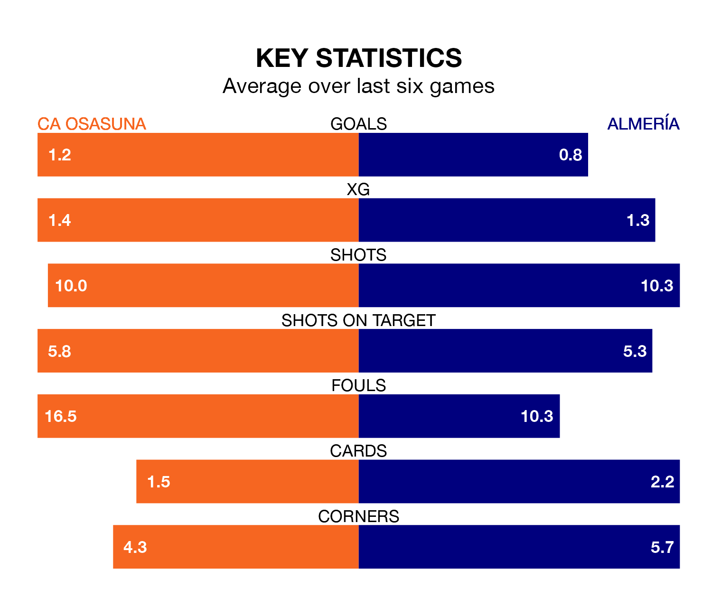

CA Osasuna are heavy favourites to keep all three points at home in Thursday's kick-off against Almería.
CA Osasuna, who sit 12th in La Liga with 18 games played, are priced at 1.6 to seal victory at the Estadio El Sadar.
Sitting eight places and 14 points behind them in the table, Almería are 5.0 to win with *Betting Company*, while the draw is at 3.9.
Osasuna are in disappointing form in La Liga, with one win and three draws from their last six games.
With no wins and two draws over that period, Almería's form is worse – they have taken two points from 18, compared to CA Osasuna's six.
In the last 10 years, Osasuna and Almería have played each other on 10 occasions. Osasuna won seven of them, Almería one, and they drew twice.
On average, CA Osasuna scored 1.4 goals and Almería 0.6 in those matches.
Their last meeting was on May 13, when Osasuna won 3-1 at home.
With 19 goals in 18 games so far this season, the away team are scoring at below the league average rate with 1.1 goals per game. And they are conceding more than average, letting in 42 goals at a rate of 2.3 per game.
The hosts are also below average scorers, with 1.2 goals per game, compared to a league average of 1.3. They have conceded 1.6 goals per game.
In Ante Budimir, Osasuna have one of the league's most on-form strikers so far this season. He has notched eight goals in 18 appearances, to sit sixth in the scoring charts.
His goal rate of one every 164 minutes is quicker than that of Sergio Arribas, Almería's top scorer with a goal every 241 minutes, and a total of five goals in 18 games.
Osasuna's last match was on December 21, a 3-2 loss against RCD Mallorca, with Pablo Ibáñez and Raúl García de Haro getting the goals for CA Osasuna.
Almería lost 3-2 against FC Barcelona last time out, on December 20, with Edgar González and Léo Baptistão on the scoresheet.
Thursday's match will be refereed by César Soto Grado, who has taken charge of 11 La Liga games so far this season, issuing four red cards and booking 75 players. He has awarded three penalties.
He is yet to oversee a match featuring either Osasuna or Almería this season.
Updated: 12:57, 02/01/24